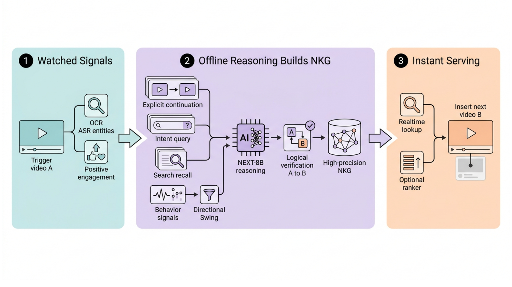
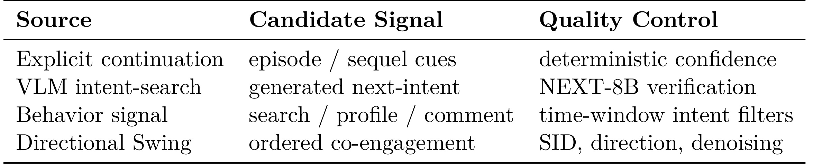
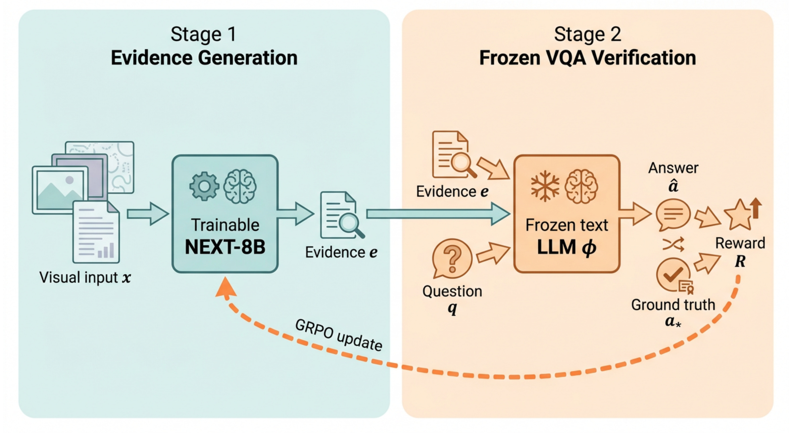
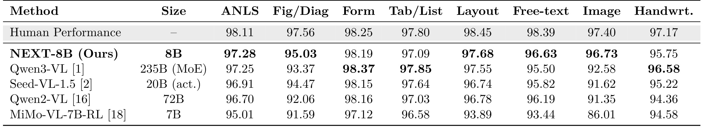
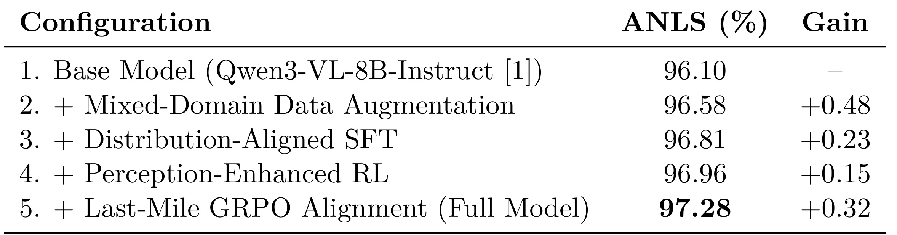
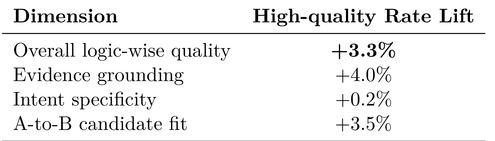
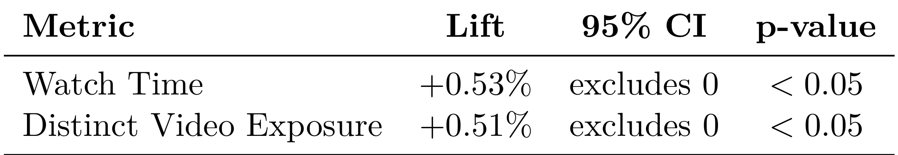

NEXT：基于视觉语言模型的推理驱动视频推荐
Meta 的 Yuming Liu 等人在论文 NEXT: Reasoning-Driven Video Recommendation via a Vision-Language Model 中提出 NEXT（Next-interest EXploration Transformer）：它不再只问“哪些视频和当前视频相似或经常被一起观看”，而是先判断用户看完当前视频后逻辑上还想知道什么，再把这个意图变成检索请求并找到能承接它的视频。论文同时训练了 8B 参数的视觉语言模型 NEXT-8B，并将离线生成的定向转移边作为新增召回通路部署到大规模短视频推荐系统。作者未在论文入口给出独立公开的代码或项目页，本笔记因此聚焦可由论文核验的方法、公式、实验与工程边界。
短视频推荐擅长复现历史共现，却不擅长判断用户看完当前视频后逻辑上还缺什么；这会让续集、答案、结果与解释被热度和相似性信号淹没，造成叙事断裂与探索不足。
1. 背景和问题
1.1 从“相似内容”到“下一步意图”
工业推荐系统通常以行为日志为主：协同过滤学习哪些物品被相似用户共同消费，双塔模型把用户与物品映射到可近邻检索的向量空间，序列模型从最近行为预测下一次点击或观看。这些路线对总体参与度非常有效，但它们优化的是历史分布中的相关性。若“第 1 集”和“第 2 集”在日志里因为曝光不足没有形成强共现，或者一个视频抛出问题后，真正的答案来自语义表面差异很大的另一个视频，那么向量相似和共现强度都可能把“应该接着看什么”排在热门同类内容之后。
NEXT 所抓住的是一种更窄、但产品价值很明确的需求：用户刚看完视频 $v_{\text{current}}$，当前内容可能留下一个未完成状态，例如续集线索、实验结果、谜题答案、人物背景或事件后续。系统需要从当前视频及上下文中抽取这个状态，得到下一步意图 $z_{\text{next}}$，再从候选库中寻找满足该意图的视频。论文把任务写成：
第一式的关键不是给当前视频贴一个静态主题标签，而是形成带方向的“下一步需求”；第二式也不是寻找与 $v_{\text{current}}$ 最相似的 $v$，而是在给定意图后寻找最能满足它的内容。因此 $A\rightarrow B$ 与 $B\rightarrow A$ 不必对称：第 1 集自然指向第 2 集，但反向边未必成立；提问视频指向答案视频，答案视频也不必再指回提问。这个非对称性是 NEXT 与普通 Item-to-Item 图最本质的区别。
1.2 三类已有路线为何不能直接解决
协同信号的问题是“看过的人还看过”并不等于“看完后需要看”。热门内容、重度用户和曝光机制都会放大共现，导致强相关边中混有大量没有逻辑承接关系的内容。语义相似检索的问题则相反：它能找到同一主题，却容易错过“答案—问题”“结果—过程”“续集—前集”这类互补关系，因为互补内容在词面和画面上可能并不最像。序列推荐虽然有方向，但一般围绕用户历史优化下一行为概率，难以沉淀可跨用户复用、可解释且可低延迟查询的物品级转移边。
直接把通用 VLM 放入线上请求链路也不现实。短视频全量解析需要处理采样帧、OCR、ASR、实体、布局和场景，推理成本远高于传统召回；如果每次请求都让大模型生成意图、召回并验证候选，吞吐与尾延迟会难以控制。更重要的是，通用 VLM 可能生成流畅摘要，却漏掉小字号文本、人物身份、空间关系或一闪而过的关键提示。对 NEXT 而言，一个漏掉的“Part 1”或实体名会直接把转移方向弄错，语言流畅并不能补救证据缺失。
论文因此把问题拆成两层：离线层负责高成本的内容理解、意图生成、候选召回和逻辑验证，在线层只在用户对触发视频产生正向反馈后查一张预计算图，并将少量高精度候选注入后续序列。这种拆分不是简单的性能工程，而是产品假设的一部分：NEXT 并不替代原推荐器，而是补充一条“逻辑承接”召回通路；它追求精度优先，允许覆盖有限，但要求写入图中的边足够可靠，能在正向观看后被立即使用。
1.3 论文的核心研究问题与贡献边界
研究问题可以概括为：能否训练一个足够小、但对细粒度视觉证据足够敏感的 VLM，使它在大规模内容库中充当“意图生成器 + 逻辑验证器”，并把结果转成生产推荐系统可消费的定向图边？论文给出的答案由四部分组成：以 Item-to-Intent-to-Item 重写推荐关系；通过显式连续、行为信号、受约束的 Swing 和 VLM 搜索提出候选；用 NEXT-8B 的三阶段后训练提升证据抽取和逻辑判断；把昂贵推理移到离线或近线，仅在在线阶段查询 NEXT Knowledge Graph（NKG）。
值得提前划清的是，论文并未证明这种路线能覆盖全部推荐需求。它验证的是“作为额外召回源是否带来增量”，而不是“VLM 是否应取代协同过滤、序列模型或在线排序”。线上对照组仍包含优化过的多路召回与 HSTU 类序列模型，实验组只增加 NEXT。因而正确阅读方式是：NEXT 找到了一类传统相关性系统容易遗漏的高价值边，并证明这类边有可测的生产增益；它没有证明所有用户兴趣都能或应该被解释成单一逻辑后续。
2. 方法
2.1 Item-to-Intent-to-Item 与 NEXT Knowledge Graph
NEXT 的核心工件是有向图 NKG。每条边写作 $\langle v_{\text{trigger}},v_{\text{next}}\rangle$：前者是用户刚看完并产生正向参与的触发视频，后者是能够继续、回答或解决前者留下需求的候选视频。边不是由单个模型端到端直接吐出，而经历“证据抽取—多源候选提出—NEXT-8B 意图推理与验证—边评分与写库—在线查询与注入”的生命周期。候选源只负责提议，最终能否进入图仍取决于逻辑适配、来源可靠性、新鲜度与质量过滤。

图 1 把系统分成三个连续但计算成本完全不同的区域。左侧“Watched Signals”汇集触发视频、OCR/ASR/实体与正向参与信号；中间是离线推理核心，显式续集、意图查询、搜索召回、行为信号和 Directional Swing 都只产生候选，随后由 NEXT-8B 判断 $A$ 是否真的应当指向 $B$，通过者进入高精度 NKG；右侧在线链路只做实时查询、可选的小集合排序和直接插入。这里最重要的工程选择是把语义推理结果物化为图边：VLM 不必在每次请求中重复理解同一视频，在线服务也不必接入一个独立的大模型 ranker。图中从 NKG 到实时查询的箭头说明，模型能力通过离线资产进入线上，而不是通过实时生成进入线上。 这张图还揭示了 NEXT 的触发条件：系统不是看到任何曝光都强行插入后续，而要先观察正向参与，例如较高完成度、点赞、收藏或其他强反馈。这样可以避免“用户其实不喜欢触发视频，却被迫继续叙事”的错误。若 NKG 只有一个高精度后续，系统可以直接插入；若存在多个候选，则复用现有在线排序器在这个小集合内个性化选择。NKG 负责保证候选具有逻辑承接性，原 ranker 负责在多个合理承接中选择更适合当前用户的一个，两者职责清晰分离。
2.2 意图中心挖掘与多源候选
内容挖掘首先区分显式连续与隐式意图。显式连续指视频中有“Part 1”“下一集”“未完待续”等可确定线索，系统融合 OCR 与 ASR 的置信度：
符号解释。 $C_{\text{ocr}}$ 和 $C_{\text{asr}}$ 分别表示两种模态对连续线索的置信度，$w_{\text{ocr}}$ 与 $w_{\text{asr}}$ 控制权重。当 $S_{\text{series}}>\tau$ 时，系统可以优先写入 $V_{\text{part}_n}\rightarrow V_{\text{part}_{n+1}}$。这里的阈值 $\tau$ 是精度—覆盖权衡：阈值过低会把“提到下一集”误当作真正续集关系，过高则漏掉模糊字幕或语音线索。论文没有披露权重和阈值的生产取值，因此复现时必须单独在带时序标签的数据上校准。 隐式意图没有可直接解析的续集编号。NEXT-8B 需要从采样帧、OCR、ASR、实体和场景中生成紧凑查询，例如“这个实验最后成功了吗”“视频中提到的人是谁”“谜题的答案是什么”。查询进入既有视频搜索栈取得召回，随后模型联合触发证据、意图和候选证据进行验证。这个过程把“生成什么”与“去哪里找”分开：VLM 不承担全库索引，搜索系统不承担逻辑推理。生成的意图只是内部检索枢纽，不是面向用户的解释文本，因此评价重点应是它能否召回正确后续，而非语言是否华丽。
行为侧补充三种高确定性模式。Watch $\rightarrow$ Search 表示用户观看后主动搜索，搜索词直接暴露信息缺口；Watch $\rightarrow$ Creator Profile $\rightarrow$ Watch 表示用户跳到作者主页找续集；Watch $\rightarrow$ Comment 则从“第二集呢”“后来怎样了”这类评论中读出下一兴趣。论文强调时间窗、语义和意图过滤，因为离触发视频很久之后的搜索或主页访问未必与它相关。行为信号同样只是候选源，不能绕过 NEXT-8B 验证直接成为最终边。

表 1 用四行说明候选源与其护栏是一一对应的：显式连续依赖确定性置信度，VLM 意图搜索依赖 NEXT-8B 验证，行为信号依赖时间窗意图过滤，Directional Swing 依赖 Semantic ID、方向和去噪。它没有给出一个统一加权公式，反而体现了异构来源的治理思路：每种来源先在最适合自己的证据空间中控制错误，再进入统一验证与边评分。对工业系统而言，这比把所有特征粗暴拼入同一向量更易审计，也便于追踪一条错误边究竟源自 OCR、用户行为、协同统计还是 VLM 判断。 表中还隐含精度优先的路由顺序。显式连续在超过阈值时优先级最高，因为“第 $n$ 集到第 $n+1$ 集”比统计相关更接近确定关系；隐式场景则通过查询和验证获得覆盖；行为与协同信号用于补足内容模型难以直接观察的用户意图。如果来源可靠度没有随边一起记录，后续的新鲜度更新、错误诊断和不同业务场景阈值调整都会失去抓手。论文在部署章节提到边写入包含来源、验证分数和新鲜度，这正是让 NKG 成为可治理生产资产的必要元数据。
2.3 Scene-Aware Reasoning Swing
传统 Swing 根据用户集合的重叠寻找物品关联，但高活跃用户、无序共现和热门主题会制造大量“像是有关、却没有下一步含义”的边。NEXT 对 Swing 加了三类约束。第一是方向性，只保留同一会话窗内先消费 $i$、再消费 $j$ 的用户；第二是语义分区，物品对必须共享 Semantic ID（SID）前缀，从而避免完全不相关主题的偶然共现；第三是去噪，在评分前移除低支持样本。最终分数写作：
$U_{\text{dir}}(i,j)$ 只包含按顺序消费 $i$ 后再消费 $j$ 的用户，直接赋予边方向；$w_u$ 和 $w_{u'}$ 对高活跃用户降权，防止“什么都看的人”支配关联；$\gamma^{|\Delta t_{u,u'}|}$ 对不一致或相距较远的转移时间衰减；分母中的 $\alpha$ 保证数值稳定，而同一 SID 分区内的交集规模用于抑制过度普遍的共现；$\mathbb{I}_{\text{denoise}}$ 则把低支持或未通过规则的边整体置零。
直觉上，这个分数不是在问两个视频有多少共同受众，而是在问：是否有多位经过活跃度校正的用户，在相近的会话节奏中，沿相同语义场景从 $i$ 稳定转向 $j$。即便如此，分数仍只是候选证据。NEXT-8B 还要检查 $j$ 是否真的回答、继续或解决了 $i$ 引出的需求。这个二次验证很关键，因为方向性共现也可能只是平台排序造成的曝光路径；如果系统先展示 $i$ 再展示热门 $j$，日志会形成方向，却不代表因果性的兴趣承接。 复现这一模块至少需要明确四个未公开口径：会话窗长度、SID 前缀粒度、低支持阈值与时间衰减参数。SID 太粗会把大主题中的热门共现留下，太细又会排除语义互补但表面不同的答案视频；会话窗太长会混入后续无关行为，太短会漏掉用户主动搜索后再观看的真实链路。因此论文公式给出了结构，却没有给出可直接搬用的生产超参数，工程上必须用边精度、覆盖和在线贡献联合标定。
2.4 NEXT-8B 的三阶段后训练
NEXT-8B 采用标准 8B VLM 架构，论文的模型贡献主要在后训练而非新增骨干。输入视频被转成采样帧及 OCR、ASR、实体、布局和场景线索，模型承担三个连续职责：先生成忠实且不依赖特定问题的视觉证据，再把证据变成下一意图查询，最后验证召回候选能否满足该意图。训练配方依次包含 Perception-Enhanced RL、Distribution-Aligned 数据增强与 SFT、Last-Mile GRPO。 Perception-Enhanced RL。 通用 VLM 容易根据问题只抓最显眼线索，或输出流畅但不完整的摘要。论文反过来要求模型先生成 query-agnostic evidence。给定视觉输入 $x$，多模态策略生成证据 $e$：
冻结的纯文本验证器 $\phi$ 看不到图像，只能用 $e$ 回答问题集合 $Q$：
证据的奖励由验证器回答正确率给出：
$a_q^*$ 是标准答案，$r$ 衡量预测与答案的正确性。因为 $\phi$ 冻结且无法访问原图，奖励提升只能来自 $e$ 保存了更多可用于多种问题的视觉事实，而不能靠验证器适应数据。与“针对当前问题生成答案”的训练相比，这种设计鼓励证据覆盖人物、文本、数值、空间关系和布局，使同一份证据能支持多个下游问题，也更适合 NEXT 随后生成未预先给定的下一意图。

图 2 直观展示了信息瓶颈：左侧可训练 NEXT-8B 从视觉输入 $x$ 产出证据 $e$；右侧冻结文本 LLM $\phi$ 同时接收 $e$ 和问题 $q$，根据答案 $\hat a$ 与真值 $a_*$ 的一致性形成奖励 $R$，再沿虚线回传更新左侧。关键约束是右侧模型没有视觉旁路，所以左侧不能靠“让验证器自己看图”掩盖证据缺失。图中一份 Evidence $e$ 指向多个问答结果，也对应 query-agnostic 的目标：模型必须先形成可复用的事实表示，再让不同问题消费它。 训练用 GRPO。对每个 $x_i$ 从旧策略采样 $K$ 个证据字符串 $e_i^{(k)}$，用各自奖励减去组内平均得到相对优势：
策略目标为：
其中
组内相对优势避免依赖单独训练的价值模型；截断项限制一步更新幅度，$\epsilon$ 是截断范围；KL 正则以系数 $\beta$ 约束策略不要偏离参考模型过远。这里的优化对象是证据字符串分布，不是最终推荐点击率。它建立的是“视觉事实更完整 $\rightarrow$ 冻结文本模型回答更正确”的代理链条，随后还需通过推荐任务评测验证迁移是否成立。 Distribution-Aligned Augmentation and SFT。 论文把真实与合成 DocVQA 风格数据按比例混合：
真实池包含 ChartQA、TableVQA、InfoVQA 等，合成池由大型 VLM 教师和多专家一致标签补足稀有布局与长尾问题。虽然这些数据不是推荐日志，但它们训练的细粒度文本、表格、图形和布局感知，与视频帧中的字幕、实体和场景线索共享能力底座。$\lambda$ 控制真实性和长尾覆盖之间的权衡；上标 $t$ 表示合成池可随迭代更新，而不是一次生成后固定不变。 自由问答可能有多个等价字符串。若直接要求模型匹配单一参考答案，标点、格式或同义表达会产生无意义梯度。论文从可接受标签集合 $\mathcal{Y}(x)$ 中选择与当前预测 $\hat y$ 最接近的目标：
相似度使用归一化 Levenshtein：
最终 SFT 目标为：
这相当于在“答案语义正确”的约束内，选择模型当前最容易对齐的字符串，减少格式差异造成的训练震荡。但它也有边界：Levenshtein 衡量字符编辑而非语义，若可接受集合不完整，最相近字符串不一定是最适合的监督；若合成标签共享教师偏差，多专家共识也可能只是相关错误的一致。论文未披露合成数据规模、教师构成、$\lambda$ 或迭代策略，外部复现很难判断增益来自数据量、分布覆盖还是目标选择。 Last-Mile GRPO。 最后阶段继续用组相对优化，但奖励转向下游可用性：答案简洁、格式稳定、证据忠实，以及把观察事实与推断意图区分开。对推荐系统而言，这一阶段不是文风微调。离线任务会把生成查询和验证分数写入下游系统，格式漂移会导致解析失败，未经证据支持的意图会制造错误边，冗长输出则增加吞吐成本。最后一轮 GRPO 因而负责把“能看懂”转成“可稳定生产”。 三阶段的逻辑顺序是：Perception-Enhanced RL 先提高证据载荷，混合数据与 DA-SFT 扩展视觉问答覆盖并稳定多答案格式，Last-Mile GRPO 再校准实际输出偏好。训练阶段更新模型，生产推理则主要在离线或近线批任务中运行；在线请求不执行这三步，也不实时运行 NEXT-8B。模型不是在线推荐器，而是离线图构建中的推理引擎。这一定位既解释了为何 8B 的规模很重要，也解释了 DocVQA 只是一项能力代理而非最终业务指标。
2.5 离线建图与在线即时注入
离线任务把显式连续、VLM 意图搜索、行为枢纽和受约束协同边汇总到统一池。NEXT-8B 对每个候选 $v_{\text{next}}$ 判断其是否逻辑承接 $v_{\text{trigger}}$，每个触发视频只保留最强边或少量高分边，并把来源、验证分数和新鲜度写入 Real-time NEXT DB。这里“Real-time”描述在线可低延迟查询，并不意味着边由实时 VLM 生成；新内容仍受离线/近线挖掘吞吐和刷新周期约束。 在线阶段先识别对触发视频的正向参与。单候选时直接将 $v_{1.a}$ 插入即将展示的序列；多候选时，用已有生产 ranker 在 $\{v_{1.a},v_{1.b},\ldots\}$ 中选择。论文明确不新增 NEXT 专用在线排序器，因为候选已通过离线逻辑验证，在线模型只需做小集合个性化。这降低了接入复杂度，但也提出一个校准问题：如果离线边分数与在线用户偏好没有共同尺度，直接插入可能破坏全局 slate 优化。论文的线上实验说明总体上收益为正，却没有披露插入位置、频率、流量上限和与其他召回源的竞争规则。 多跳能力目前也未进入线上主流程。系统解决的是一次 $v_1\rightarrow v_{1.a}$ 注入，而不是持续链式 $v_1\rightarrow v_{1.a}\rightarrow v_{1.a.b}$。单跳限制降低错误累积与“把用户困在一条故事线”风险；另一方面，它也让 NEXT 更像一个精确的局部补丁，而非完整兴趣规划器。论文把多步转移列为后续工作，说明当前 NKG 的价值应按一跳增量评估。
3. 实验结果
3.1 三层证据链与评价口径
论文用三层证据验证不同环节。第一层是 DocVQA Task 1，检验模型能否从文档图像中的文本、表格、图形、布局和照片中抽取细粒度证据；第二层对 1,000 个视频的下一意图与候选边做 LLM-as-a-judge，检查视觉训练是否迁移到推荐逻辑；第三层在商业短视频平台做持续数周、约一亿用户规模的在线 A/B 测试，检验新增召回路径是否真正改善观看与内容探索。
这三层不能互相替代。DocVQA 强只能说明视觉证据能力具备，不等于生成的推荐边对用户有用；LLM judge 能比较 $A\rightarrow B$ 的逻辑，但其偏好可能与真实用户不一致；在线 A/B 最接近产品目标，却难以解释增益来自哪一训练阶段。论文的优点是没有只报单一 benchmark，而是用“能力代理—任务迁移—生产因果实验”串成链条。阅读时仍要分别检查每层的样本、基线和披露完整度。
3.2 DocVQA 主结果
DocVQA 含 12,767 张文档图像和超过 50,000 个问题，官方测试以 Average Normalized Levenshtein Similarity（ANLS）评价。NEXT-8B 没有为该任务改造专用架构，而使用论文描述的三阶段后训练。比较表以 2026 年 1 月公开榜单为口径，因此它是一个时间截面，后续榜单变化不应反向改写论文当时结论。

表 2 中 NEXT-8B 以 8B 参数达到 97.28 ANLS，是所列单模型中最高，整体仅低于论文提到但未放入表格的多智能体系统；人类为 98.11，差距 0.83 点。Qwen3-VL 的总体 ANLS 为 97.25，只低 0.03，但它是 235B MoE，论文据此强调 NEXT-8B 近 30 倍更小。这个比较支持“紧凑模型通过定向后训练逼近大模型”，但不能直接推导实际吞吐提升 30 倍，因为 MoE 激活参数、视觉 token 数、解码长度和部署优化都会影响真实成本。
分项比总体更能对应方法动机。NEXT-8B 在 Figure/Diagram 为 95.03，高于 Qwen3-VL 的 93.37；Free-text 为 96.63，对方为 95.50；Image 为 96.73，对方为 92.58，分别高 1.66、1.13 和 4.15 点。这些是视觉证据与非结构化内容更重的类别，与 Perception-Enhanced RL 的目标一致。与此同时，Qwen3-VL 在 Form、Tab/List 和 Handwritten 上更高，说明 NEXT-8B 并非所有细分都占优。论文将优势解释为感知训练有效是合理线索，但因为各阶段不是在完全相同控制条件下逐类别展开，仍不能仅凭分项差异断言某个阶段造成了全部提升。
3.3 训练配方消融
消融以 Qwen3-VL-8B-Instruct 为基座，逐步加入 Mixed-Domain Data Augmentation、Distribution-Aligned SFT、Perception-Enhanced RL 和 Last-Mile GRPO。论文特别说明 Perception-Enhanced RL 的收益通过后续 SFT 与 GRPO 中更强证据体现，而不是把该阶段单独当作最终 QA checkpoint，因此表格是累加配方而非完全独立的因子实验。

表 3 从 96.10 开始：混合领域数据增强带来最大单步增益 $+0.48$，达到 96.58；Distribution-Aligned SFT 再增 $+0.23$ 到 96.81；Perception-Enhanced RL 增 $+0.15$ 到 96.96；Last-Mile GRPO 增 $+0.32$，最终 97.28。四步合计 $+1.18$。数据增强和最后对齐贡献较大，说明性能并非只由新 RL 机制驱动；更广覆盖的数据与输出偏好校准同样关键。这一点对工程决策很重要：如果团队只有有限训练预算，不应看到“RL”就忽视数据分布和稳定输出的收益。
但这张表不能回答顺序交互。如果把 Perception-Enhanced RL 放在数据增强之前，或移除 DA-SFT 只保留 GRPO，结果可能不同；逐步累加也没有方差、重复训练或显著性区间。尤其 $+0.15$ 的幅度较小，若训练随机性未知，难以判断稳定性。外部复现应固定数据、算力和随机种子，至少做多次运行，并报告每阶段对 DocVQA、下一意图质量与实际推理成本的共同影响，不能只追总体 ANLS。
3.4 从视觉问答迁移到推荐边质量
为了弥补 DocVQA 与视频推荐之间的任务差距，作者抽取 1,000 个视频，让基座 VLM 与 NEXT-8B 在相同视频派生输入上生成下一意图，再通过搜索获取候选。一个强 LLM judge 在隐藏模型身份、随机化输出顺序后，查看触发证据、生成意图和候选证据，以 1—5 分评价 grounding、specificity、candidate fit 和总体逻辑质量。高质量率定义为得分至少 4 的样本比例，表中报告 NEXT-8B 相对基座的提升。

表 4 显示总体逻辑高质量率相对提升 $+3.3\%$，证据落地提升 $+4.0\%$，意图具体性只提升 $+0.2\%$，A-to-B 候选适配提升 $+3.5\%$。这种分布比“所有维度均匀上涨”更有解释力：后训练没有主要把查询写得更长或更具体，而是更好地保留实体、续集线索、未解问题与事件结果，并拒绝仅表面相似但不能承接的候选。它与 query-agnostic evidence 的设计形成了可读的一致链条。
不过表中是相对提升而非绝对高质量率。若基座从 60% 提升到 61.98%，与从 90% 提升到 92.97% 的产品含义不同；论文也未披露 judge 型号、提示词、人工一致性或误差区间。随机化和隐藏身份能减轻位置与品牌偏差，却不能消除 LLM judge 对冗长表达、特定措辞或自身知识的系统偏好。可信的复现应公布绝对率、置信区间、人工抽检和按意图类型分层结果，并单独检查 judge 是否把“听起来合理”误当作“视频证据真实支持”。
3.5 线上 A/B 测试
线上实验持续多周，规模约一亿用户。对照组是已有的多召回生产推荐器，其中包括 HSTU 类序列模型；实验组在此基础上增加 NEXT 作为内容推理转移源。论文报告每个主指标的 95% 置信区间排除 0，双侧 $p<0.05$，且负反馈、安全和延迟护栏没有显著退化。

表 5 给出观看时长 $+0.53\%$、独立视频曝光 $+0.51\%$。在成熟推荐系统和大流量下，这种相对增益具有实际意义：观看时长表明逻辑承接没有以牺牲参与度为代价，独立曝光同步上升则支持“不是只重复热门相似内容”的探索目标。两项一起上升比单看时长更符合 NEXT 的产品叙事，因为它希望补充带方向的新内容，而不只是把用户锁在同质簇中。
因果解释必须限定为“增加 NEXT 路径相对于当时生产基线的整体处理效应”。实验没有把显式续集、行为信号、Swing 和 VLM 意图搜索分别随机化，无法分辨哪一来源贡献最大；也不能从 $+0.53\%$ 推断 NEXT 候选自身点击率或观看质量。论文没有披露流量切分、插入频次、平台名称、用户地域、绝对观看时长、长期留存或创作者公平性。所谓负反馈、安全和延迟无显著退化也缺少数值与置信区间，因而只能视为作者报告的护栏结论，不能做更细定量分析。
论文认为 Precision、Recall、NDCG 不适合作为最终离线指标，因为它们奖励重放历史行为，可能惩罚历史中未曝光却逻辑合理的新后续。这个判断对探索型召回成立，但不意味着离线评估可以完全省略。上线前仍需要边级人工精度、错误类型、覆盖、新鲜度、去重与安全过滤；线上 A/B 用来回答“新路径是否创造用户价值”，离线审计用来阻止明显错误进入实验。两者应互补，而不是把传统离线指标失配解释成无需质量门槛。
4. 总结
4.1 我的判断
NEXT 最有价值的贡献不是把一个 VLM 接到推荐系统，而是把“推荐什么”重新表述为可落地的定向关系构建：先从当前内容恢复未完成意图，再用搜索获得规模化召回，用模型验证逻辑承接，最后把结果物化为可低延迟查询的 NKG。它绕开了实时大模型推理的成本，把 VLM 放在最能发挥语义推理、又不伤害在线 SLA 的离线建图位置；同时保留现有推荐器来做全局流量与个性化排序，部署姿态相当克制。
证据链也较完整：97.28 ANLS 说明 8B 模型的视觉证据能力强；1,000 视频评测显示增益主要来自 grounding 与 A-to-B fit，而非意图文案变长；约一亿用户的多周 A/B 又给出观看与独立曝光的显著提升。最应避免的过度解读，是把这些结果说成“推理替代相关性”或“DocVQA SOTA 直接带来线上收益”。真正成立的是多阶段系统的联合效果，且 NEXT 仍依赖搜索、行为、协同信号、已有 ranker 与生产护栏。
4.2 工程启发与复现建议
复现应先做边资产而非先训大模型：定义显式续集、答案、结果、实体详情等意图 taxonomy；为每条边保存 trigger、candidate、来源、证据片段、验证分数、新鲜度与拒绝原因；用人工标注建立高精度小测试集，再评估通用 VLM 的证据抽取和候选验证错误。只有确认瓶颈确实在视觉细节与逻辑判断，才值得投入 Perception-Enhanced RL 或领域 SFT。
训练复现应把四类指标并列：视觉代理 benchmark、边级绝对精度与覆盖、离线吞吐/单位视频成本、线上增量与护栏。特别要复核式 (2) 的 OCR/ASR 阈值、式 (3) 的会话窗和 SID 粒度、Perception-Enhanced RL 的问题集合覆盖，以及合成数据教师是否把偏差带入证据。在线接入宜沿论文的 additive path：限制注入频次，设边 TTL 与快速回滚，对单候选直接插入和多候选 ranker 选择分别监控，避免逻辑正确却不符合当前用户状态的候选过度占位。
4.3 局限与后续跟进
当前证据至少有四项明显局限：
- 全量视频的 VLM 离线推理仍昂贵，论文没有披露吞吐、GPU 成本、刷新延迟和 NKG 覆盖，无法评估单位增益成本。
- LLM-as-a-judge 只报告相对提升，缺少绝对率、judge 身份、人工一致性和分意图类型误差，任务迁移证据仍有测量不透明。
- 线上实验未公开流量配置、注入策略与长期指标，负反馈、安全和延迟也没有数值表，因此泛化到其他平台需谨慎。
- 单跳逻辑承接可能强化狭窄叙事链；即使独立曝光增加，也不能替代对长期多样性、创作者分布、公平性与兴趣漂移的分析。
后续值得跟进三条路线：第一，用蒸馏、批处理、缓存和候选级早退降低离线挖掘成本，让新内容更快获得边；第二，在不破坏逻辑精度的前提下，将实时行为纳入边评分或小集合重排，研究“当前用户是否此刻需要这个后续”；第三，探索带不确定性和多样性约束的多跳 NKG，让 $v_1\rightarrow v_{1.a}\rightarrow v_{1.a.b}$ 可以在证据充足时延伸，又能主动插入惊喜内容防止链路收窄。对工程团队而言，最值得借鉴的不是照搬某个模型名称，而是“离线推理产出可审计结构化资产，在线系统只消费高精度结果”的整体设计。